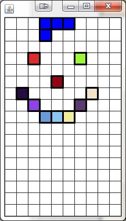

Now that we've got a basic Model and Viewer for the grid and the piece it's time to introduce a controller to give the game a brain.
Our Goals:
- Create and incorporate a basic TetrisController
- Add methods to the TetrisPiece class to allow it to be easily moved
- Link the Key Presses that the SaccoWindow recieves to the TetrisController
- Link the Key Presses that the TetrisController recieves to the TetrisPiece in
the Model.
The TetrisController class only needs to have one TetrisModel as an instance field. In the long run, the TetrisModel will need to access the TetrisGrid and the TetrisPiece. When this is necessary, the Controller should call the model's getPiece() or getGrid() methods first, and then work from there.
TetrisController's constructor should take in a TetrisModel and assign it to the instance field.
For now, the TetrisController only needs one method for determining what should happen when a key is pressed. Add a method with the following header:
public void onKeyPress(int keyCode)
This method has an identical header to the one that the SaccoWindow has. The idea is that the SaccoWindow won't do any thinking on its own. It will recieve a key press event and pass it right along to the TetrisController. From there, the TetrisController will decide how the TetrisModel should change.
The Tetris class is a SaccoWindow that will represent the User in the MVC model. It should not make any decisions, just pass all user input to the user and paint whatever the View tells it to. It currently has a TetrisModel and a TetrisView incorporated. Now that we have the basics for a TetrisController, it's time to incorporate it into the project.
Add a TetrisController as an instance field. The constructor should construct the TetrisController using the same TetrisModel that the TetrisViewer used.
Still in the Tetris class, override the onKeyPress method. This is where the event starts. All you should do here is call the onKeyPress method of the TetrisController and pass the keyCode along as the parameter.
The separate parts of our project need to communicate with the project in the proper order.
The SaccoWindow is the one that receives the keyboard event, but we want to make sure that each part of the project is only doing what it is responsible for. When the SaccoWindow is made aware of a key press, it should pass that information along to the TetrisController. The TetrisController accepts that information and decides how the Model should change, and then calls the appropriate methods to make the changes. Since the TetrisView is completely reliant on the TetrisModel, the changes that we make to the Model should be reflected visually.
Add a method to the TetrisPiece class with the following header:
public void moveInDir(int direction)
The purpose of this method will be to move the piece in whichever direction is passed in (Location.UP,Location.DOWN,Location.LEFT,Location.RIGHT). Remember that the way this is set up, you only have to change the anchor location and the rest will follow
Now that the TetrisPiece has methods that will allow it to move it's time to decide when that method is called. Go to the TetrisController’s onKeyPress method. If the incoming keyCode matches any of the four Location Directions, the controller should access the TetrisPiece using the TetrisModel's getPiece method and tell it to move in the corresponding direction.
Run Tetris' main method one more time. The window should still show what was there before, but this time the arrow keys should control where the Piece actually is. At the moment there is no limit to where the piece can move to. This will come into play later.
